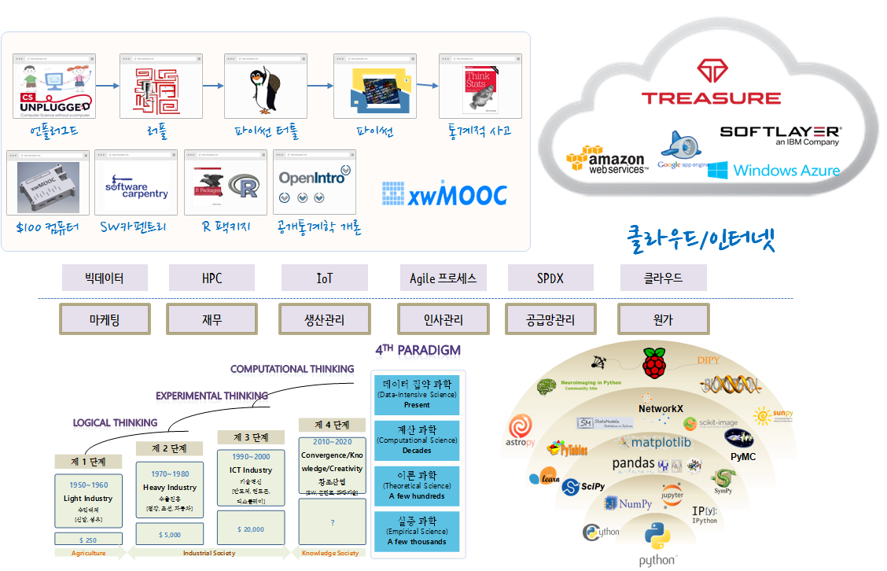

스타트업을 향한 빅데이터, IoT 기술
경영학도를 위한 IoT 창업 워크샵
- 일시: 2015년 12월 21-23일
- 장소: 영남대학교 본교(경산) 상경관 신관 156호 전산실, 구글지도
- 준비물: 노트북

목차
- 경영학도를 위한 스타트업 기본 (1일차)
- 스타트업 사례: xwMOOC $100 오픈 컴퓨터
- 소프트웨어 제품과 서비스: 준비중
- 소프트웨어 제조: 준비중
- 컴퓨터 원가관리: 준비중
- 지적재산권(IP): 특허, 상표, 저작권, 라이선스
- 컴퓨터적 사고(Computational Thinking)
- 스타트업 사례: xwMOOC $100 오픈 컴퓨터
- 기본 컴퓨팅 기술 (2일차)
- 스타트업을 위한 IoT (3일차)
참고자료
- 한국통계진흥원에서 발간 통계의 창 (2015년 여름호)
- 통계교육원 > 열린교육방 > e-book 게시판
- 미래인재 데이터과학지: 교육사례중심
- 전체 다운로드(100MB)
- 강서양천신문 ’15년 9월